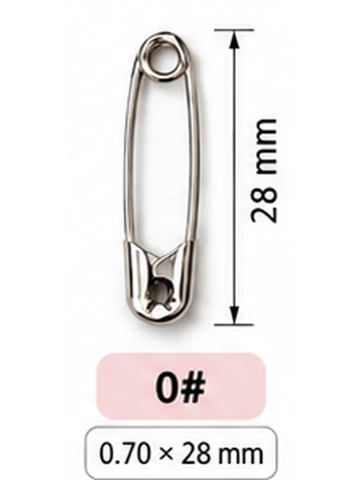

เช็คลิสต์ถุงนักวิ่งและวันรับเบอร์ สำหรับผู้จัดงานวิ่ง
งานวิ่งหนึ่งงานมีของเล็ก ๆ ที่ต้องเตรียมหลายร้อยหลายพันชุด และของที่มักนึกได้ทีหลังสุดคือเข็มกลัด เช็คลิสต์นี้รวบรวมของที่ต้องมีในถุงนักวิ่ง วิธีคิดจำนวนเข็มกลัดพร้อมตารางจำนวนกล่อง และวิธีจัดวันรับเบอร์ให้คิวไม่ติด
ของในถุงนักวิ่งที่ต้องมี
เบอร์วิ่ง (BIB)
ตรวจเลขและชื่อบนเบอร์ให้ตรงกับรายชื่อผู้สมัครก่อนแพ็ก แล้วเรียงถุงตามเลขเบอร์ วันรับเบอร์จะหยิบได้เร็วขึ้นมาก
เข็มกลัด 4 ตัวต่อคน
ใส่เข็มกลัด 4 ตัวในซองเล็กหรือกลัดติดกับเบอร์ไว้เลย ถ้าใส่หลวม ๆ ในถุงมักหล่นหาย คิดจำนวนรวมได้จากเครื่องคำนวณเข็มกลัดงานวิ่ง
เสื้อตามไซซ์ที่สมัคร
แยกกองตามไซซ์ก่อนแพ็ก และเผื่อเสื้อไว้ที่โต๊ะแก้ปัญหาสำหรับคนที่ขอเปลี่ยนไซซ์หน้างาน
ชิปจับเวลา ถ้างานมี
บางงานติดชิปไว้ด้านหลังเบอร์ บอกนักวิ่งในเอกสารว่าห้ามพับเบอร์และห้ามกลัดทับแถบชิป
เอกสารข้อมูลงาน
กำหนดการ เวลาปล่อยตัว แผนที่เส้นทาง จุดให้น้ำ และที่จอดรถ ทำเป็นแผ่นเดียวอ่านง่าย หรือใส่ QR ไปหน้าข้อมูลงาน


คิดจำนวนเข็มกลัดให้พอ
คิดคนละ 4 ตัว แล้วเผื่อสำรองอีก 10% สำหรับตัวที่ตกหล่นตอนแพ็กและนักวิ่งที่มาขอเพิ่มหน้างาน ตารางนี้คิดจำนวนกล่องให้แล้วทั้งเบอร์ 2 และเบอร์ 0 เบอร์ 0 บรรจุ 864–1,728 ตัวต่อกล่องตามล็อต จำนวนกล่องจึงเป็นช่วง
| จำนวนนักวิ่ง | เข็มกลัดรวมสำรอง | เบอร์ 2 | เบอร์ 0 |
|---|---|---|---|
| 500 คน | 2,200 ตัว | 3 กล่อง | 2–3 กล่อง |
| 1,000 คน | 4,400 ตัว | 6 กล่อง | 3–6 กล่อง |
| 3,000 คน | 13,200 ตัว | 16 กล่อง | 8–16 กล่อง |
| 5,000 คน | 22,000 ตัว | 26 กล่อง | 13–26 กล่อง |
| 10,000 คน | 44,000 ตัว | 51 กล่อง | 26–51 กล่อง |
| 20,000 คน | 88,000 ตัว | 102 กล่อง | 51–102 กล่อง |
ยังเลือกเบอร์ไม่ได้ ดูตารางเทียบเบอร์ 0 กับเบอร์ 2 ได้ที่หน้าเข็มกลัดงานวิ่ง หรือส่งรูปเบอร์วิ่งมาถามทาง LINE
จัดวันรับเบอร์ให้ไหลลื่น
แยกโต๊ะตามช่วงเลขเบอร์
เช่น 1–500, 501–1,000 ติดป้ายตัวใหญ่ให้เห็นจากไกล นักวิ่งเดินไปถูกโต๊ะเองได้ คิวจะไม่กองที่จุดเดียว
เตรียมรายชื่อที่ค้นได้เร็ว
นักวิ่งหลายคนจำเลขเบอร์ตัวเองไม่ได้ ให้มีจุดค้นจากชื่อหรือเบอร์โทร แล้วบอกช่วงโต๊ะที่ต้องไป
มีโต๊ะแก้ปัญหาแยกต่างหาก
เรื่องชื่อผิด เปลี่ยนไซซ์เสื้อ หรือสมัครแทนกัน ให้ไปโต๊ะนี้ทั้งหมด โต๊ะแจกเบอร์จะได้ไม่ช้าลง
วางเข็มกลัดสำรองไว้ทุกโต๊ะ
นักวิ่งมักขอเข็มกลัดเพิ่ม หรือทำหล่นตอนเปิดถุง สำรอง 10% ที่สั่งไว้ควรแบ่งวางทุกโต๊ะ ไม่ใช่เก็บไว้ที่เดียว
สั่งเข็มกลัดยังไงให้ทันวันแจกเบอร์
ทักมาทาง LINE พร้อมจำนวนนักวิ่ง เบอร์ที่ต้องการ และวันแจกเบอร์ ทางร้านคำนวณจำนวนกล่องรวมสำรองและแจ้งราคาพร้อมค่าส่งให้ ออกใบเสนอราคาและใบกำกับภาษีในนามบริษัทได้ รายละเอียดระยะเวลาสั่งอยู่ในหน้าเข็มกลัดงานวิ่ง
คำถามที่ถามกันบ่อย
งานวิ่ง 5,000 คน ต้องใช้เข็มกลัดกี่กล่อง
5,000 คน × 4 ตัว = 20,000 ตัว เผื่อสำรอง 10% เป็น 22,000 ตัว ถ้าใช้เบอร์ 2 คือ 26 กล่อง ถ้าใช้เบอร์ 0 คือ 13–26 กล่อง ขึ้นกับจำนวนต่อกล่องของล็อตที่ส่ง
ควรใส่เข็มกลัดในถุงหรือแจกที่โต๊ะ
ใส่ในถุงพร้อมเบอร์สะดวกที่สุด นักวิ่งได้ครบตั้งแต่รับถุง ส่วนที่โต๊ะให้มีสำรองไว้สำหรับคนที่ขอเพิ่ม
ทำไมต้องเผื่อสำรอง 10%
เข็มกลัดตกหล่นได้ตอนแพ็กถุงหลายพันใบ และมีนักวิ่งขอเพิ่มหน้างานเสมอ ถ้าของขาดในวันรับเบอร์จะหาซื้อเพิ่มทันยาก
สั่งในนามบริษัทผู้จัดงานได้ไหม
ได้ ทางร้านออกใบเสนอราคาและใบกำกับภาษีในนามบริษัท หน่วยงาน หรือโรงเรียน แจ้งข้อมูลผู้เสียภาษีทาง LINE
อ่านต่อ
ส่งจำนวนนักวิ่งมา ทางร้านคิดให้
บอกจำนวนนักวิ่ง เบอร์เข็มกลัด และวันแจกเบอร์ ทีมงานสำเพ็งคำนวณจำนวนกล่องและแจ้งราคาให้